4 Web Scraping and Functions
4.1 Simple web scraping
R can read html using either rvest, xml, or xml2 packages. Here we are going to navigate to the Center for Snow and Avalance Studies Website and read a table in. This table contains links to data we want to programatically download for three sites. We don’t know much about these sites, but they contain incredibly rich snow, temperature, and precipitation data.
4.1.1 Reading an html
4.1.1.1 Extract CSV links from webpage
site_url <- 'https://snowstudies.org/archived-data/'
#Read the web url
webpage <- read_html(site_url)
#See if we can extract tables and get the data that way
tables <- webpage %>%
html_nodes('table') %>%
magrittr::extract2(3) %>%
html_table(fill = TRUE)
#That didn't work, so let's try a different approach
#Extract only weblinks and then the URLs!
links <- webpage %>%
html_nodes('a') %>%
.[grepl('24hr',.)] %>%
html_attr('href')4.1.2 Data Download
4.1.2.1 Download data in a for loop
#Grab only the name of the file by splitting out on forward slashes
splits <- str_split_fixed(links,'/',8)
#Keep only the 8th column
dataset <- splits[,8]
#generate a file list for where the data goes
dir.create("data", showWarnings = FALSE)
file_names <- paste0('data/',dataset)
for(i in 1:3){
download.file(links[i],destfile=file_names[i])
}
downloaded <- file.exists(file_names)
evaluate <- !all(downloaded)4.1.3 Data read-in
4.1.3.1 Read in just the snow data as a loop
#Pattern matching to only keep certain files
snow_files <- file_names %>%
.[!grepl('SG_24',.)] %>%
.[!grepl('PTSP',.)]
#empty_data <- list()
## snow_data <- for(i in 1:length(snow_files)){
## empty_data[[i]] <- read_csv(snow_files[i]) %>%
## select(Year,DOY,Sno_Height_M)
## }
#snow_data_full <- do.call('rbind',empty_data)
#summary(snow_data_full)4.1.3.2 Read in the data as a map function
## define a function to read in list of csv files
our_snow_reader <- function(file){
name = str_split_fixed(file,'/',2)[,2] %>%
gsub('_24hr.csv','',.)
df <- read_csv(file) %>%
select(Year,DOY,Sno_Height_M) %>%
mutate(site = name)
}
## use map to call function defined above
snow_data_full <- map_dfr(snow_files,our_snow_reader)
summary(snow_data_full)4.1.3.3 Plot snow data
## summarize snow data by year
snow_yearly <- snow_data_full %>%
group_by(Year,site) %>%
summarize(mean_height = mean(Sno_Height_M,na.rm=T))
## plot snow data
ggplot(snow_yearly,aes(x=Year,y=mean_height,color=site)) +
geom_point() +
ggthemes::theme_few() +
ggthemes::scale_color_few()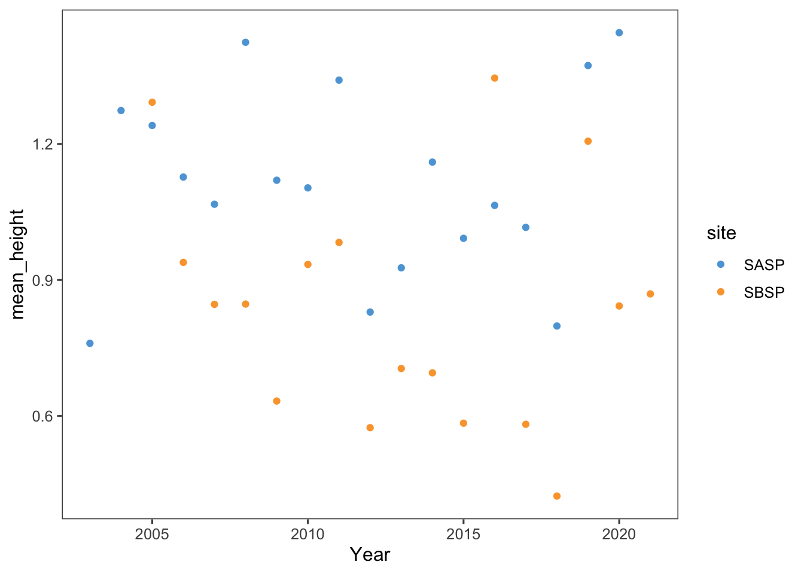
4.2 Assignment:
4.2.1 Question 1
Extract the meteorological data URLs. Here we want you to use the rvest package to get the URLs for the SASP forcing and SBSP_forcing meteorological datasets.
#use the rvest package to scrape the url
site_url <- "https://snowstudies.org/archived-data/"
webpage <- read_html(site_url)
#find weblinks and extract the urls
links <- webpage %>%
html_nodes("a") %>% ## <a> tag defines a hyperlink
html_attr("href") %>% ## href is the URL the link goes to
.[grepl(".txt", .)] %>% ## only pull txt files
.[grepl("SASP_Forcing|SBSP_Forcing", .)] ## could also use just "_Forcing" but question specifically asks for only SASP and SBSP (in case site is updated later to include a new _Forcing file)4.2.2 Question 2
Download the meteorological data. Use the download_file and str_split_fixed commands to download the data and save it in your data folder. You can use a for loop or a map function.
4.2.2.1 Download with for loop
## extract dataset names
splits <- str_split_fixed(links, "/", n = 8)
dataset <- splits[,8]
file_names <- paste0('data/',dataset)
## use download_file to create local copy of data with for loop
for(i in 1:length(links)){
download.file(links[i],destfile=file_names[i])
}4.2.3 Question 3
Write a custom function to read in the data and append a site column to the data.
## this code grabs the variable names from the metadata pdf file
headers <- pdf_text('https://snowstudies.org/wp-content/uploads/2022/02/Serially-Complete-Metadata-text08.pdf') %>%
readr::read_lines(.) %>%
trimws(.) %>%
str_split_fixed(.,'\\.',2) %>%
.[,2] %>%
.[1:26] %>%
str_trim(side = "left") %>%
make.names(unique = FALSE, allow_ = TRUE)
## create function to read data
my_data_reader <- function(file){
## extract name of file
fname <- substr(file, str_locate(file, "SBB_")[2]+1, str_locate(file, "SBB_")[2]+4)
## read in data
df <- read_table(file
, skip = 4
, col_names = headers
, skip_empty_rows = TRUE
, na = c("-9999.000", "")
) %>%
select("year", "month", "day", "hour", "air.temp..K.", "precip..kg.m.2.s.1.") %>%
mutate(site = fname)
return(df)
}4.2.4 Question 4
Use the map function to read in both meteorological files. Display a summary of your tibble.
## read in data using function created above
metoc_hourly_full <- map_dfr(file_names, my_data_reader)
## show data summary
summary(metoc_hourly_full)## year month day hour
## Min. :2003 Min. : 1.000 Min. : 1.00 Min. : 0.00
## 1st Qu.:2005 1st Qu.: 3.000 1st Qu.: 8.00 1st Qu.: 5.75
## Median :2007 Median : 6.000 Median :16.00 Median :11.50
## Mean :2007 Mean : 6.472 Mean :15.76 Mean :11.50
## 3rd Qu.:2009 3rd Qu.: 9.000 3rd Qu.:23.00 3rd Qu.:17.25
## Max. :2011 Max. :12.000 Max. :31.00 Max. :23.00
## air.temp..K. precip..kg.m.2.s.1. site
## Min. :242.1 Min. :0.000e+00 Length:138336
## 1st Qu.:265.8 1st Qu.:0.000e+00 Class :character
## Median :272.6 Median :0.000e+00 Mode :character
## Mean :272.6 Mean :3.838e-05
## 3rd Qu.:279.7 3rd Qu.:0.000e+00
## Max. :295.8 Max. :6.111e-034.2.5 Question 5
Make a line plot of mean temp by year by site (using the air temp [K] variable). Is there anything suspicious in the plot? Adjust your filtering if needed.
This initial plot of mean hourly temperature by year shows a much lower average temperature for both sites in the first year of the data (2003).
## summarize mean temp by year, site
metoc_site_year <- metoc_hourly_full %>%
group_by(site, year) %>%
summarise(mean_temp = mean(air.temp..K., na.rm = TRUE)
, cnt = n()) %>%
arrange(site, year)
## function to create line graph of temp by year for each site
my_line_graph <- function(my_data){
print(
ggplot(my_data, aes(x = year, y = mean_temp, color = site)) +
geom_line(alpha=0.8, size = 1.3) +
geom_point(alpha=0.8, size = 1.3) +
scale_x_continuous(limits = c(min(metoc_hourly_full$year), max(metoc_hourly_full$year)), breaks = seq(1900, 2200, by = 1)) +
labs(
title = "Average Temperature by Year"
, subtitle = "Swamp Angel Study Plot and Senator Beck Study Plot"
) +
ylab("Mean Temp. (K)") +
xlab("") +
scale_color_brewer(palette = "Dark2") +
theme_bw() +
theme(
legend.position="bottom"
, legend.box = "horizontal"
, axis.text.x = element_text(size = 11)
)
)
}
## plot with full data
my_line_graph(metoc_site_year)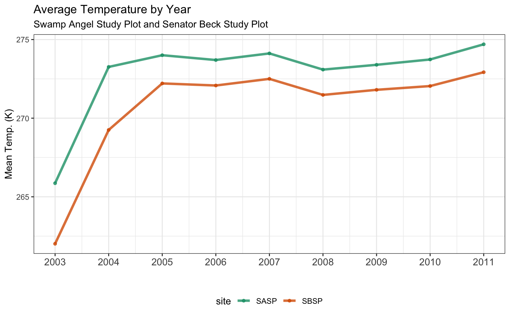
Looking at a count of the records by year reveals that the first and last year of the data do not include a full year of data. As this is hourly data, a full year of data should have 365*24 = 8,760 records (8,784 records on leap year).
## investigate what is happening in 2003 by looking at record counts
ggplot(metoc_site_year, aes(x= as.character(year), y=cnt, fill = site)) +
geom_col(alpha=0.8, width = 0.7) +
geom_text(aes(label = scales::comma(cnt)), colour = "black", angle = 90, hjust="top") +
facet_grid(. ~ site) +
scale_y_continuous(labels = label_comma()) +
labs(
title = "Number of hourly records by year"
, subtitle = "Swamp Angel Study Plot and Senator Beck Study Plot"
) +
ylab("Count Obs.") +
xlab("") +
scale_fill_brewer(palette = "Dark2") +
theme_bw() +
theme(
legend.position="none"
, axis.text.x = element_text(size = 11, angle = 90, vjust=0.2)
)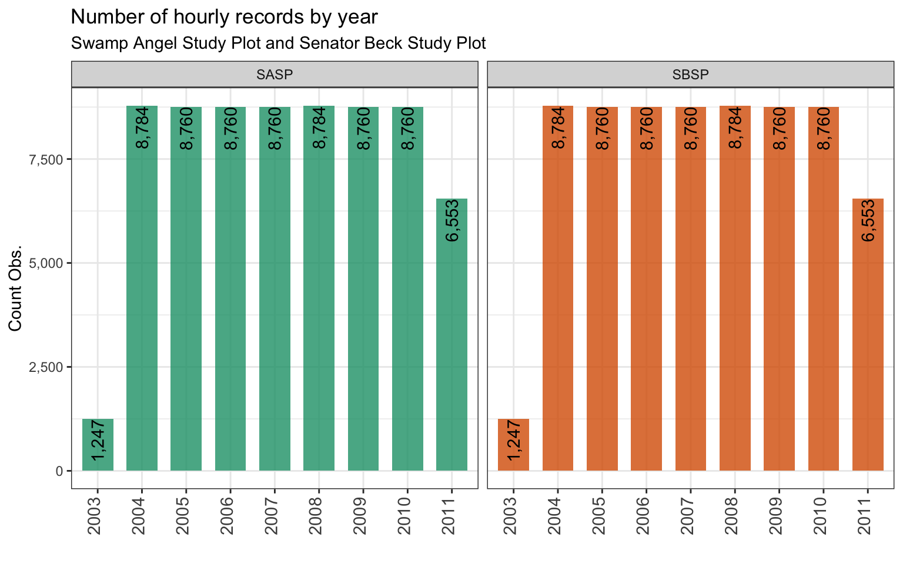
We can filter out yearly records that have incomplete data and plot the average hourly temperature by year again.
## line graph of temp by year for each site filtered for complete data
my_line_graph(metoc_site_year %>% filter(cnt >= 8760))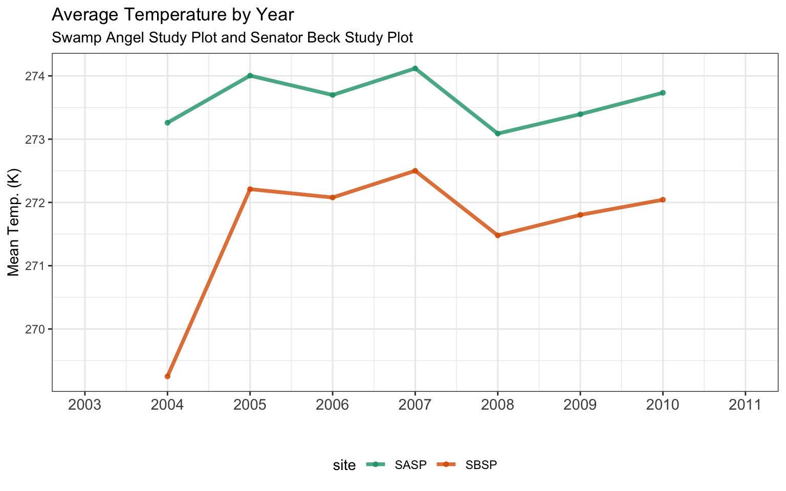
4.2.6 Question 6
Write a function that makes line plots of monthly average temperature at each site for a given year. Use a for loop to make these plots for 2005 to 2010. Are monthly average temperatures at the Senator Beck Study Plot ever warmer than the Snow Angel Study Plot? Hint: https://ggplot2.tidyverse.org/reference/print.ggplot.html
## summarize mean temp by year, month, site
metoc_site_year_mo <- metoc_hourly_full %>%
group_by(site, year, month) %>%
summarise(mean_temp = mean(air.temp..K., na.rm = TRUE)
, cnt = n()) %>%
arrange(site, year, month)
## function to create line graph of temp by year for each site
my_line_graph_month <- function(my_data, my_year){
#generate title
my_title <- paste0(as.character(my_year), " Average Temperature by Month")
#plot
(
ggplot(my_data %>% filter(year==my_year), aes(x = (month), y = mean_temp, color = site)) +
geom_line(alpha=0.8, size = 1.3) +
geom_point(alpha=0.8, size = 1.3) +
scale_x_discrete(limits=month.abb) +
labs(
title = my_title
, subtitle = "Swamp Angel Study Plot and Senator Beck Study Plot"
) +
ylab("Mean Temp. (K)") +
xlab("") +
scale_color_brewer(palette = "Dark2") +
theme_bw() +
theme(
legend.position="bottom"
, legend.box = "horizontal"
, axis.text.x = element_text(size = 11)
)
)
}
## plot with loop to create a plot for each year
my_years <- c(2005:2010)
for (i in 1:length(my_years)) {
print( my_line_graph_month(metoc_site_year_mo, my_years[i]) )
}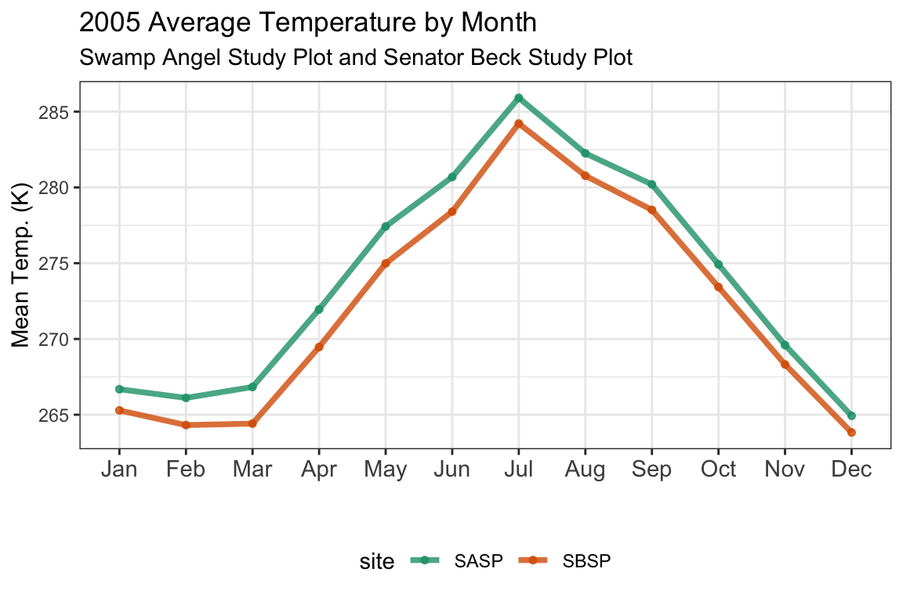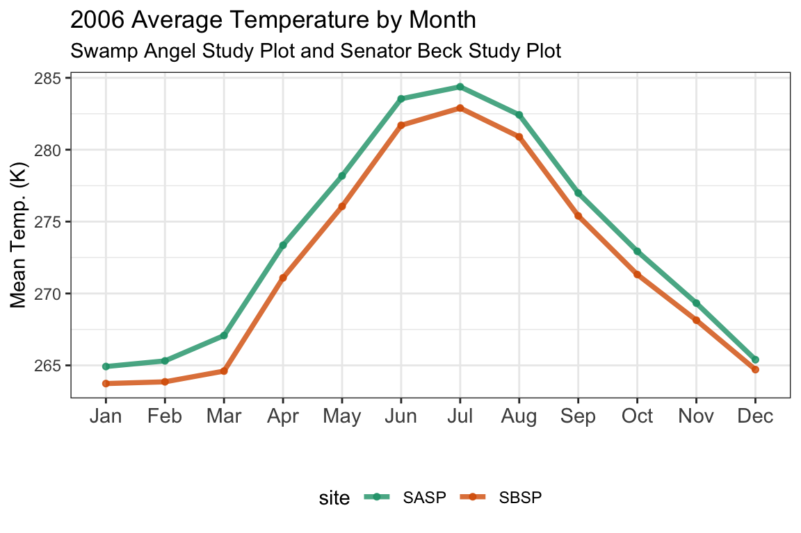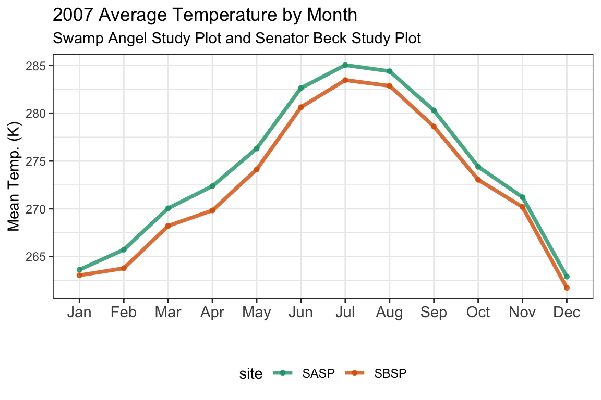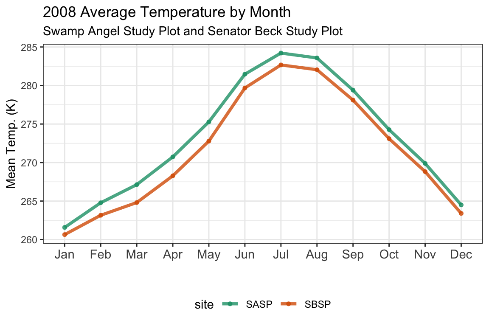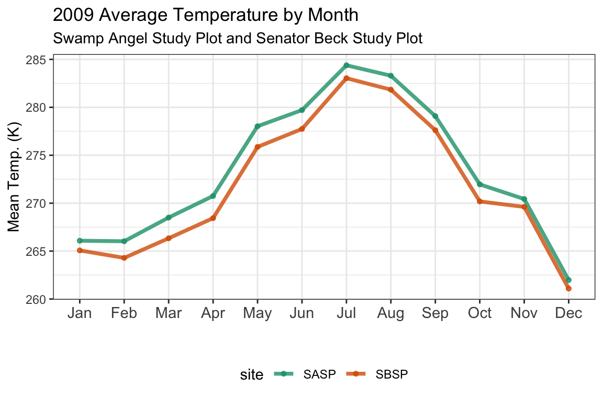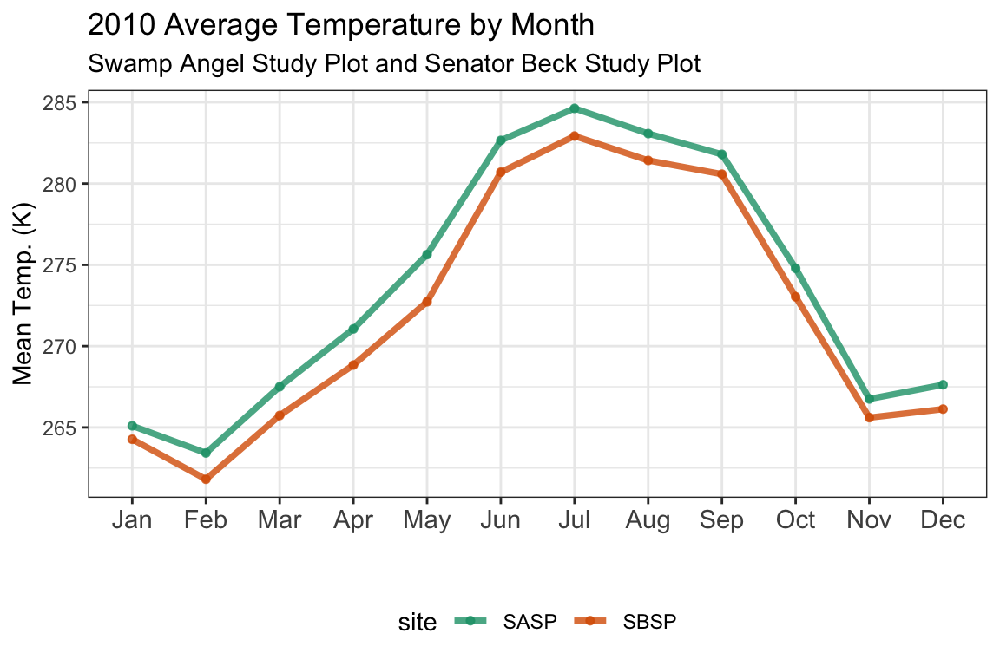
4.2.6.1 A better way?
Producing an individual chart for each year of interest can also be accomplished by using the facet_grid option in ggplot. With this option there is no need to write a loop to produce an individual graph for each year.
#plot each year using facet_grid
ggplot(metoc_site_year_mo %>% filter(year %in% my_years), aes(x = (month), y = mean_temp, color = site)) +
geom_line(alpha=0.8, size = 0.9) +
geom_point(alpha=0.8, size = 0.9) +
facet_grid(. ~ year) +
scale_x_discrete(limits=month.abb) +
labs(
title = "2005-2010 Average Temperature by Month"
, subtitle = "Swamp Angel Study Plot and Senator Beck Study Plot"
) +
ylab("Mean Temp. (K)") +
xlab("") +
scale_color_brewer(palette = "Dark2") +
theme_bw() +
theme(
legend.position="bottom"
, legend.box = "horizontal"
, axis.text.x = element_text(size = 7, angle = 90)
)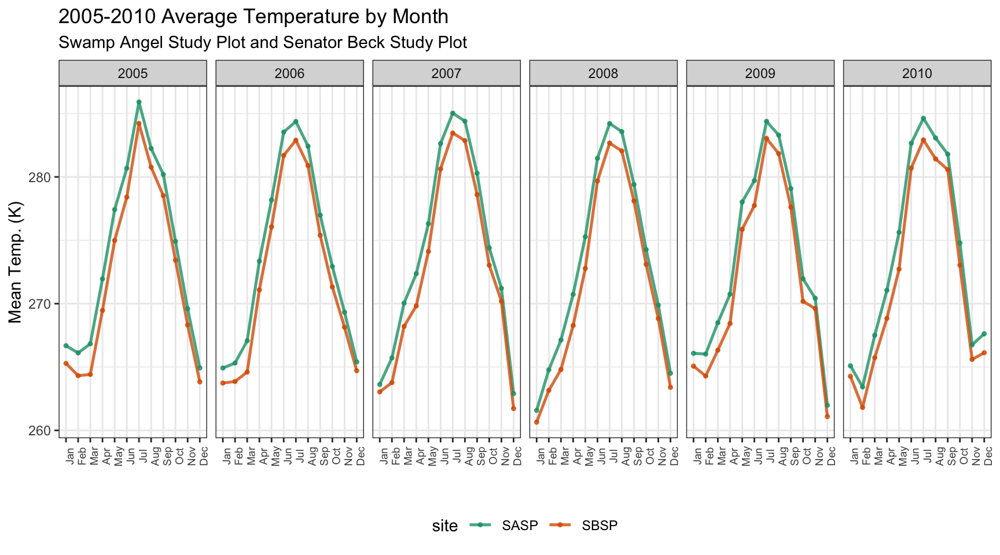
4.2.7 Bonus Question 1
Make a plot of average daily precipitation by day of year (averaged across all available years). Color each site.
## summarize total precipitation by date, site
metoc_doy_site <- metoc_hourly_full %>%
mutate(date_id = make_date(year, month, day)
, day_of_year = yday(date_id)
) %>%
group_by(site, date_id, day_of_year) %>%
summarise(tot_precip = sum(precip..kg.m.2.s.1.)) %>%
group_by(site, day_of_year) %>% ## now take the avg of total daily precip by doy
summarise(mean_daily_precip = mean(tot_precip, na.rm = TRUE)) %>%
arrange(site, day_of_year) %>%
mutate(month_day = as.Date(day_of_year, origin = "1999-12-31")) ## this date will make for plotting with date label
## note to choose a leap year above to handle years with 366 days
## plot mean precip by doy
ggplot(metoc_doy_site, aes(x = month_day, y = mean_daily_precip, color = site)) +
geom_line(alpha=0.5, size = 0.5) +
geom_point(alpha=0.5, size = 0.4) +
geom_smooth(method = loess, se = FALSE, alpha=1, size = 0.9) +
facet_grid(. ~ site) +
scale_x_date(date_labels = "%b-%d", date_minor_breaks = "1 month") +
labs(
title = "Average Precipitation by Day of Year"
, subtitle = "Swamp Angel Study Plot and Senator Beck Study Plot"
) +
ylab("Mean Precip. (kg/m2/s)") +
xlab("") +
scale_color_brewer(palette = "Dark2") +
theme_bw() +
theme(
legend.position="none"
, axis.text.x = element_text(size = 11, angle = 90)
)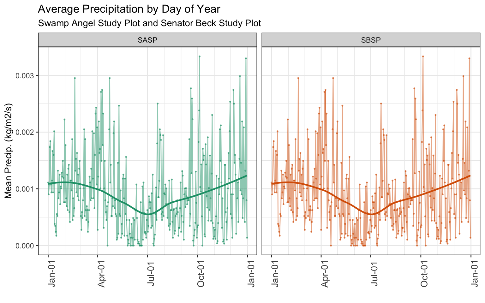
4.2.8 Bonus Question 2
Use a function and for loop to create yearly plots of precipitation by day of year. Color each site.
Personally, I prefer using facet_grid to make small multiples instead of creating an independent graph for each year.
## summarize total precipitation by date, site
metoc_hourly_full %>%
filter(year %in% c(2004:2010)) %>%
mutate(date_id = make_date(year, month, day)
, day_of_year = yday(date_id)
) %>%
group_by(site, day_of_year, year) %>%
summarise(tot_precip = sum(precip..kg.m.2.s.1.)) %>%
arrange(site, year, day_of_year) %>%
mutate(month_day = as.Date(day_of_year, origin = "1999-12-31")) %>% ## this date will make for plotting with date label
## plot mean precip by doy
ggplot(., aes(x = month_day, y = tot_precip, color = site)) +
geom_line(alpha=0.5, size = 0.5) +
geom_smooth(method = loess, span = 0.2, se = FALSE, alpha=1, size = 0.9) +
facet_grid(year ~ site, scales = "free_y") +
scale_x_date(date_labels = "%b-%d", date_minor_breaks = "1 month") +
labs(
title = "Precipitation by Day of Year"
, subtitle = "Swamp Angel Study Plot and Senator Beck Study Plot"
) +
ylab("Tot. Precip. (kg/m2/s)") +
xlab("") +
scale_color_brewer(palette = "Dark2") +
theme_bw() +
theme(
legend.position="none"
, axis.text.y = element_text(size = 6)
, axis.text.x = element_text(angle = 90)
)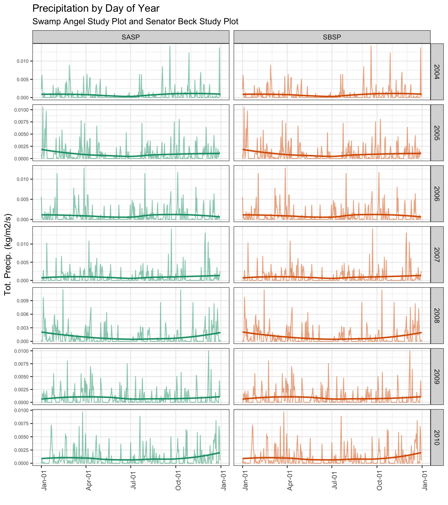